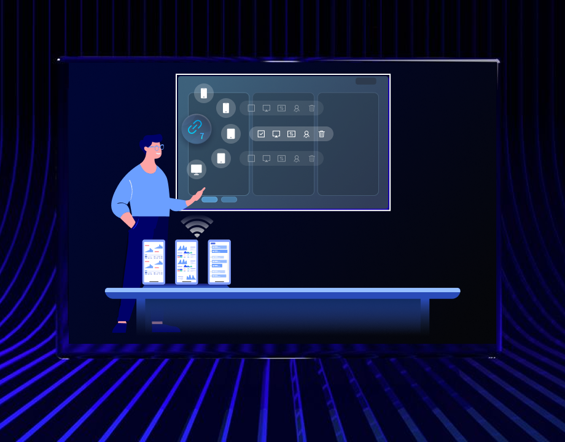
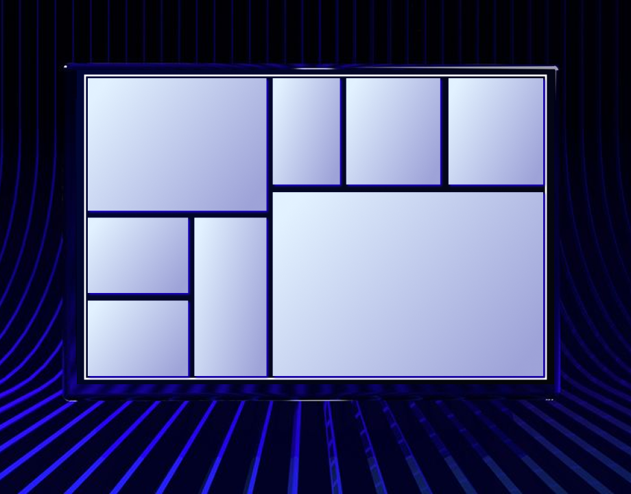

装KShare大半年后：那些当初没注意到的好用与糟心
从v1.5用到v1.7，从凑活投屏到开会离不开，说说这八个月里KShare让我惊喜和头疼的地方。
装KShare到现在八个月了，从v1.5一路升到v1.7。当初装它纯粹是被逼的——公司会议室那块皓丽大屏，AirPlay连不上Windows笔记本，Miracast偶尔能成但十次里有三次卡在"正在查找设备"，同事从官网给我找了个链接说"你试试这个"。没太当回事，觉得就是又一个投屏工具，装完能投就行。结果八个月下来，它在我电脑里从一个"会议前想起才用"的东西，变成了偶尔开会就能省十分钟折腾的玩意儿。
当初为什么装，以及当初以为它是什么
说起来，装KShare的直接动因挺简单的：每次开会投屏都要花三五分钟找方案，试AirPlay不行、插HDMI线又怕接口松、Miracast连得上但偶尔断流。同事说这个能连皓丽，我就装了。那时候对它的预期就是"能稳定投屏就行"，没多想其他功能。桌面端从微软应用商店装的，下载渠道不止这一个，流程顺得离谱——搜一下点获取，装完自动给麦克风和屏幕录制权限，托盘多了个图标。第一次投屏是在会议室，笔记本投大屏，画面出来的那一刻我就松了口气：终于不用每次开会前捣鼓十分钟了。
变化三连：越用越顺手、越用越烦、离不开和碰都没碰的
越用越顺手的是窗口化投屏和扩展屏。 一开始我以为KShare就是个镜像投屏工具，把我电脑上看到的原样投过去。后来某次开会我正在准备，需要把PPT投到大屏，但电脑上还开着别的窗口不想让同事看到。试着在桌面端找了找设置——还真有"窗口化投屏"，可以只投一个指定窗口，其他操作在本地偷偷进行。那次之后这个功能就没少用过。再后来发现还有扩展屏模式，把大屏当成第二显示器，我在笔记本上码字，大屏上显示PPT备注，两不误。这两个功能在日常办公里的价值，当初完全没预料到。

越用越烦的是分辨率和画质的问题。 这个问题我查了它的文档，但说实话没找到真正的解决方案。我用的是4K笔记本，投会议室那块1080p大屏时，画面总会模糊一些——不是很严重，但字体边缘有毛边，放投影幕布上放大了就更明显。查了文档才知道KShare协议会在4K信号源上做下采样到接收端分辨率，这是技术必需。试了把画质调到"自动"，比手动调低码率好一点，但还是没法跟原生1080p的源比。还有九分屏的问题——某次部门周会要同时展示九份报表，每路分块只有360p，字小到前排同事都眯眼睛。文档里也说了这是物理限制，每路分辨率等于大屏物理分辨率除以3，没法突破。我试过临时切到单屏独占让重点报表全屏，但九份报表同时展示的需求确实没辙。
说个反直觉的：反向控制成了我最常用的功能之一。 当初以为这个是给远程调试用的，我在会议室投屏干嘛要反向控制？结果实际用下来发现场景挺多的：演讲台在这边，大屏在对面墙上，我不想每次切幻灯片都跑过去点大屏；或者开视频会议时，大屏面向同事，我在手机上静音、切换窗口，同事看不到我操作。这个功能从v1.7开始支持，手机上触摸操作直接同步到大屏，延迟在5GHz Wi-Fi下大概两百毫秒，够用。但手机屏幕缩了4K大屏的画面，细节看不清，好在支持双指捏合放大局部。
还有个碰都没碰的：文件互传的拉取方向。 推文件到大屏用得挺多——之前开会传PPT用U盘或者微信，现在手机直接推到大屏自动打开，100MB的PDF几秒内搞定。但反过来从大屏拉文件到手机，我到现在一次都没用过。一方面是因为接收端默认不允许手机浏览内部存储，要管理员在皓丽大屏里开"文件共享"功能；另一方面也没这个需求，大屏上的文件也没什么值得拉到手机上的。这个功能留着吧，万一哪天要用来救急。

观感修正：当初高估了什么、低估了什么
当初我以为KShare就是个比AirPlay靠谱一点的投屏工具，核心价值就是"能连上"。现在回头看，这个判断太浅了。我低估了它在非会议场景的价值——比如有时候在家也用它，把笔记本投到电视上看视频、投文档给家人看，比开视频会议的用途还广。还有桌面端和手机端的配合，桌面端是发射端，手机端是控制端，两者定位互补这个设计，当初也没体会到，现在感觉挺合理的。
反过来，当初我高估了它在画质和多屏方面的表现。九分屏那个360p的物理限制，4K下采样的画质损失，这些都是硬伤，不是调参数能解决的。还有分辨率适配的问题——竖屏手机投横屏大屏两侧黑边，虽然有智能分屏能最小化黑边，但也没法完全消除。这些在刚装的时候没遇到，因为开会都是笔记本横屏投大屏，用久了各种场景都碰到了才暴露出来。
去留结论：会不会卸载、什么信号出现就该换
短期内肯定不会卸载。反向控制和窗口化投屏这两个功能，替代成本挺高的——反向控制相当于给大屏加了个触控面板，这个是其他投屏工具没有的；窗口化投屏在需要"私下操作"的时候太实用了。每次开会省掉五分钟捣鼓的时间，八个月累积下来也不少了。
但有个信号出现可能会考虑换：如果公司会议室换成原生支持AirPlay的大屏，或者其他同事换了某个投屏工具能覆盖同样的场景并且画质更好。KShare的优势其实挺大程度上绑定在皓丽大屏上——反向控制、接收端的权限管理这些功能，都是跟皓丽硬件配合的。如果哪天会议室换了别的屏，KShare的价值可能就剩一半了。
还有一点：我用的是Windows，macOS的权限问题多一些。桌面端安装的时候Mac要单独授予屏幕录制、辅助功能这些权限，每升一次系统版本可能还要重新授权。如果换Mac用户用起来麻烦点，但我自己没这个问题。
总结一下，KShare不是完美的投屏工具——画质有硬伤、九分屏有物理限制，但它在"能连上"之上多了几个真正好用的功能，而且桌面端和手机端的配合设计挺到位。从"凑活能用"到"开会离不开"，用了八个月，它确实在我的电脑里留了下来。顺手说一句，这类软件的资料我习惯分三个仓库备份——GitHub主站、Gitee国内镜像、GitCode另一路镜像，省得某个仓库挂了找不着。